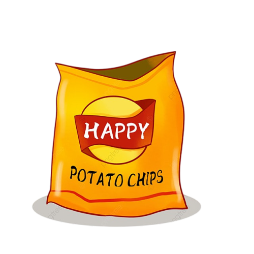

<ion-content [fullscreen]="true" color="pink2">
  <ion-button size="" shape="round" style="margin-left: 300px; margin-top: 15px;" color="g">
    จองคิว
  </ion-button>

  <ion-button shape="round" size="large" style="margin-left: 110px; margin-top: 10px;" color="cream">
    ประเภทสินค้า
  </ion-button>


  <ion-button color="cream" style="margin-left: 100px; margin-top: 20px;" (click)="goToSinka()">
    
    <br>
    <ion-label style="font-size: 20px; padding-left: 20px;" slot="end">
      เครื่องดืม
    </ion-label>
  </ion-button>

  <ion-button color="cream" style="margin-left: 100px ; margin-top: 20px;" (click)="goToSink2()">

    
    <br>
    <ion-label style="font-size: 20px; padding-left: 50px;">
      ขนม
    </ion-label>
  </ion-button>

  <ion-button color="cream" style="margin-left: 100px; margin-top: 20px;" (click)="goToSink3()">
    
    <br>
    <ion-label style="font-size: 20px;">
      อาหารแห้ง
    </ion-label>
  </ion-button>


  <ion-fab slot="fixed" vertical="bottom" horizontal="end">
    <ion-fab-button>
      <ion-icon name="chevron-up-circle"></ion-icon>
    </ion-fab-button>
    <ion-fab-list side="top">
      <ion-fab-button>
        <ion-icon name="document"></ion-icon>
      </ion-fab-button>
      <ion-fab-button>
        <ion-icon name="color-palette"></ion-icon>
      </ion-fab-button>
      <ion-fab-button>
        <ion-icon name="globe"></ion-icon>
      </ion-fab-button>
    </ion-fab-list>
  </ion-fab>
</ion-content>